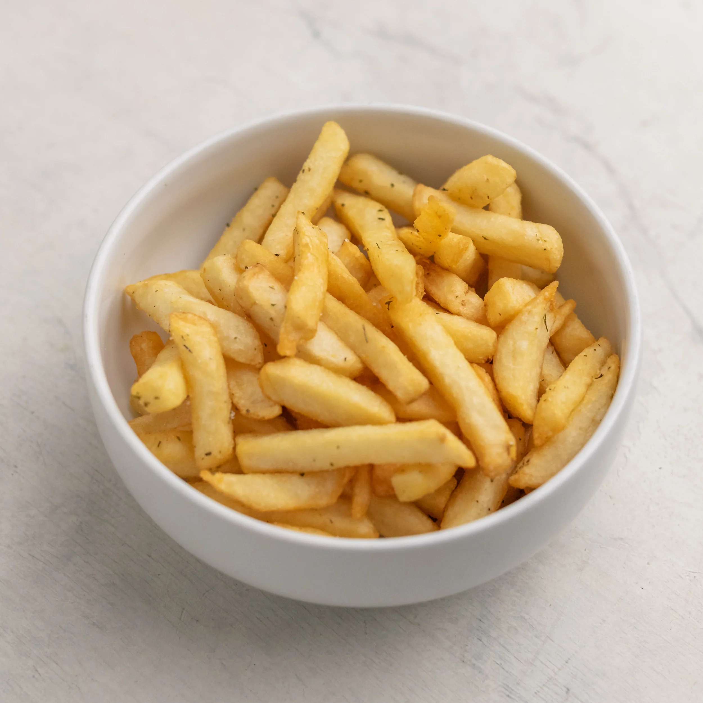

Titulo con h1
Titulo con h2
Titulo con h3
Titulo con h4
Titulo con h5
Titulo con h6
Saberes
Esta es la
segunda
clase
de la
unidad 3.
Papa
Aceite
Agua
Sal
Lava y pela las papas
Tras remojar y cortar, deben secar y poner en reposo.
